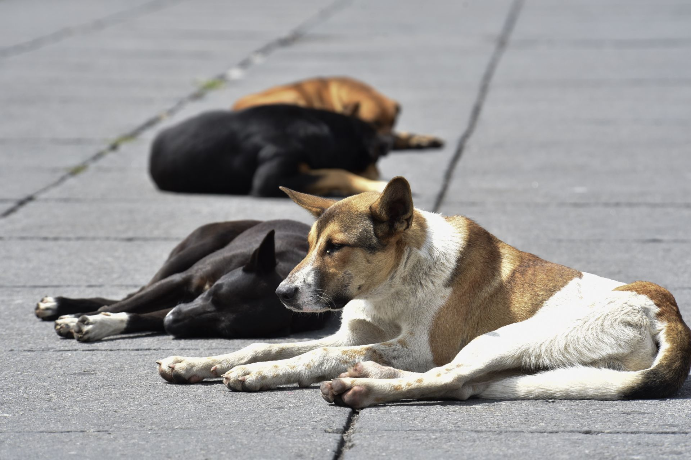

.jpeg)
CHEWPAWS

Proceso y Requisitos de Adopción
Nuestro proceso de adopción consiste en:
- Rellenar y firmar la solicitud de adopción. Pueden pedir la solicitud de adopción a través de esta página, entrando a nuestra página de Facebook, Instagram o escribiendo a chewpaw@gmail.com. Por favor lean la solicitud con atención y rellénenla de forma clara. La pueden mandar escaneada o fotografiada solo fíjense bien en que se pueden ver todos sus datos y respuestas.
- Una vez recibida su solicitud se coordinará con ustedes una entrevista telefónica y, posteriormente, una visita a su domicilio con el fin de evaluar en qué condiciones vivirá el peque que decidan adoptar.
- Si la adopción es aprobada necesitaremos copia de su IFE o identificación oficial y copia de su comprobante domiciliario Además de una cuota de adopción de $650 pesos. Esta cuota se destinará a pagar los gastos generados en recursos, veterinarios, pensiones, vacunas, medicinas, estéticas, entrenamiento, etcétera; de todos los peques que tenemos bajo nuestra protección.
Todos, tanto perros como gatos, se entregan vacunados (los cachorros con la primera vacuna), esterilizados y desparasitados. Además los perros se entregan entrenados con los comandos básicos y sabiendo pasear con correa
- Requisitos para adoptar:
1. Ser mayor de edad.
2. Que todos los miembros de la familia estén de acuerdo en la adopción.
3. Que la familia tenga capacidad para alimentarlos, mantenerlos limpios y proporcionarles atención veterinaria.
4. Familias responsables que los quieran como a un miembro más y los protejan y cuiden.
- Nuestros peques no pueden ser cedidos, regalados, vendidos, abandonados, ni llevados al antirrábico. Si no quieren que siga siendo parte de su familia tienen que ponerse en contacto conmigo de nuevo para coordinar la manera de encontrarles una nueva familia. Se pide a los adoptantes que avisen con 15 días de anticipo para poderme dar tiempo de encontrar la mejor solución.
- Por favor, si viven en zonas en donde hay muchos perritos y gatitos en la calle, no se acerquen a una fundación a adoptar. Rescaten a uno de la calle de esos que sufren y mueren cerca suyo, además así será gratis. Si necesitan orientación porque no saben cómo hacerlo, escríbanme y los orientaré. No entrego peques en esas zonas. Se necesita que los vecinos de zonas con abandono que tengan la sensibilidad de querer adoptar lo hagan levantando a uno de la calle. Si todos los ciudadanos de México adoptaran a 1 perrito o gatito de la calle acabaríamos con su sufrimiento
